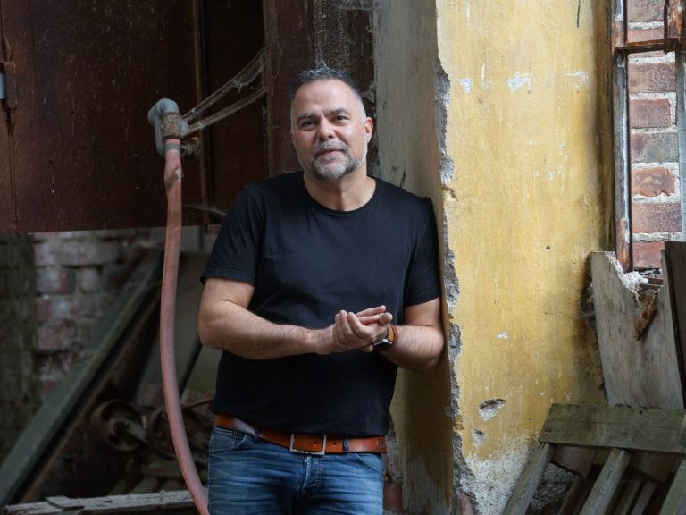
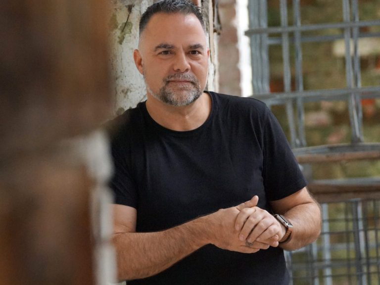

Weniger Theater. Mehr Wirkung.
Ich helfe Dir und Deinem Team, wieder handlungsfähig zu werden – mit Haltung, Struktur und Flow. Ehrlich, persönlich und auf Augenhöhe.


Erst muss es menschlich passen.
Ich habe in meinem Berufsleben viele Seiten von Organisationen kennengelernt – als Entwickler, Projektleiter, Trainer und heute als Organisationsentwickler. Dabei habe ich vor allem eines gelernt: Die beste Methode nützt nichts, wenn die Zusammenarbeit nicht stimmt.
Deshalb ist mir wichtig, dass es passt – zwischen Dir, Deinem Team und mir. Ich sage ehrlich, was ich sehe, halte, was ich zusage, und begegne Dir auf Augenhöhe. Keine Blaupausen, keine Buzzwords.
„Ich bin kein Methodenlieferant. Ich bin Dein Partner für Wirkung.“
„Ich verkaufe keine Methoden. Ich rede lieber mit Dir – direkt, persönlich, ehrlich.“
Mein Handwerkszeug.
Zertifikate sind für mich kein Selbstzweck. Sie stehen für das Werkzeug, das ich mitbringe – eingesetzt wird nur, was zu Dir und Deiner Situation passt.
Werdegang
Drei Ebenen. Ein Ziel: Handlungsfähigkeit.
Organisationen verlieren ihre Wirksamkeit, wenn Haltung, Struktur und Kommunikation nicht zusammenspielen. Schalte um und sieh, was dann passiert.
Was ich mit Dir bewege.
Je nach Bedarf punktuell oder langfristig – immer im Dienst der organisationalen Wirksamkeit.
Executive Health Series
Ehrliche Standortbestimmung für Projekte, Abteilungen oder die ganze Organisation – in 5 Tagen bis 3 Wochen.
- Project & Department Health Check
- Operational Relief & Steering
- Organisational Coherence Assessment
Flow & Steuerung
Strategie mit Umsetzung verbinden: die richtigen Teams zur richtigen Zeit an den richtigen Themen.
- Flight Levels® Architekturen
- Kanban & Flow-Messung
- OKR & operative Portfolios
Haltung & Führung
Haltung ist kein Soft-Skill. Sie ist das Fundament für Struktur und Wirkung.
- Haltungsbasierte Organisationsentwicklung
- Executive Sparring & Führungsreflexion
- Steampunk-Führung überwinden
Wie ist der Puls Deiner Organisation?
Sechs Aussagen, dreißig Sekunden. Hake ab, was Dir bekannt vorkommt – Dein Befund baut sich sofort auf.
Ein spielerischer Impuls, keine Diagnose. Die echte Standortbestimmung liefert ein Health Check.
Mit der Dampfmaschine zum Mond?
Steampunk Ökonomie nenne ich den Versuch, komplexe unternehmerische Herausforderungen mit den wirtschaftswissenschaftlichen Instrumenten des vergangenen Jahrhunderts lösen zu wollen. Agile Führung bedeutet, sie zu überwinden.

Flight Levels® und Haltungen
Die Entwicklung organisationaler und individueller Haltungen in mehreren Stufen. Business-Agilität braucht mehr als Methoden.
Mehr zum Poster →How to Create Innovation
Das UNITE Framework: ein Geschäftsmodell-Framework mit über 50 Tools für Innovation und digitale Transformation.
Mehr erfahren →Agile is dead!
Agilität war nie das Ziel. Sie war nur ein Etikett für ein viel größeres Thema: Organisationsentwicklung.
Weiterlesen →Kein Verkaufsgespräch. Ein echtes Gespräch.
Gute Zusammenarbeit beginnt damit, dass es menschlich passt. Erzähl mir, wo es hakt – und lass uns in Ruhe herausfinden, ob wir zueinander passen.
- Persönlich – per Video, Telefon oder vor Ort
- Ehrliche Einschätzung statt Pitch
- Du entscheidest, wie es weitergeht

Such Dir einen Termin aus, der Dir passt.
Du siehst meine freien Zeiten und buchst direkt in meinen Kalender. Du bekommst sofort eine Bestätigung mit Kalendereinladung.
Beim Laden wird eine Verbindung zu Calendly (USA) hergestellt. Mehr dazu in den Datenschutzhinweisen. Lieber direkt? Termin auf Calendly öffnen ↗